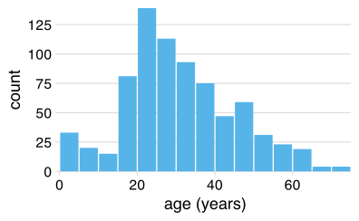
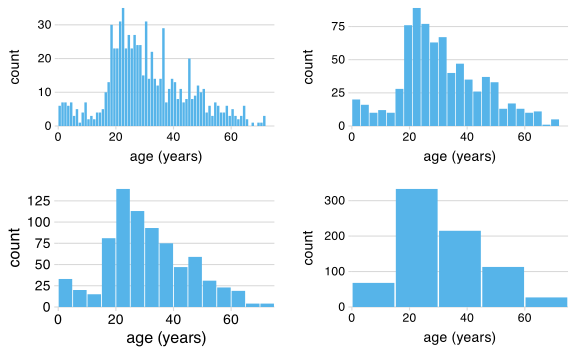
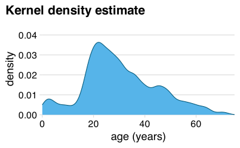
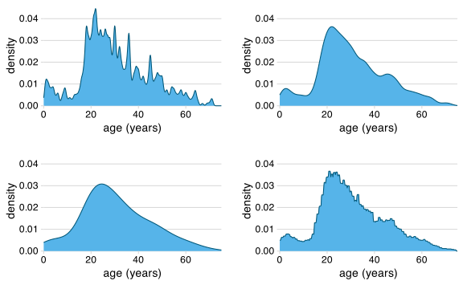
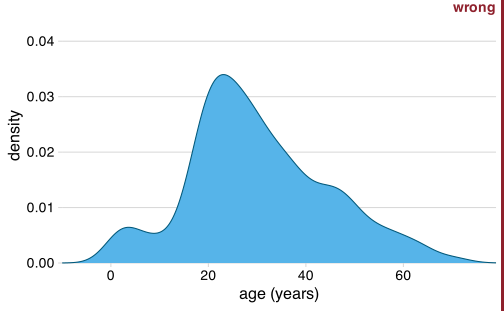
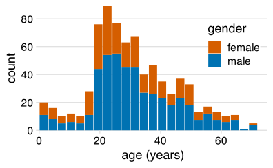
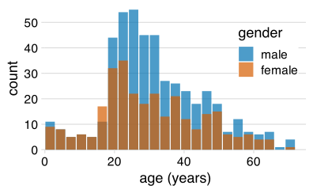
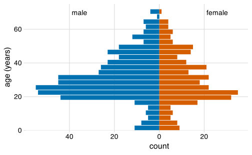
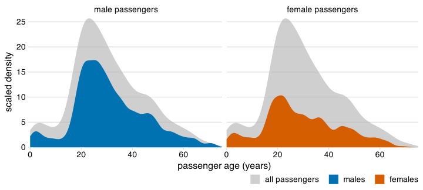
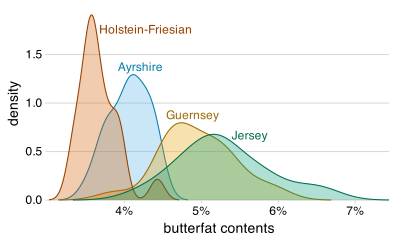

| age | sex | class | survived |
|---|---|---|---|
| 0.2 | female | 3rd | survived |
| 0.3 | male | 3rd | died |
| 0.8 | male | 2nd | survived |
| 0.8 | male | 2nd | survived |
| 0.8 | male | 3rd | survived |
| 0.9 | male | 1st | survived |
| 1.0 | female | 2nd | survived |
| 1.0 | female | 3rd | survived |
| 1.0 | male | 2nd | survived |
| 1.0 | male | 2nd | survived |
| 1.0 | male | 3rd | survived |
| 1.5 | female | 3rd | died |
| 1.5 | female | 3rd | died |
| 2.0 | female | 1st | died |
| 2.0 | female | 2nd | survived |
Visualizing distributions 1
Claus O. Wilke
2025-01-07
Histograms and density plots
Passengers on the Titanic
| age | sex | class | survived |
|---|---|---|---|
| 2 | female | 3rd | died |
| 2 | female | 3rd | died |
| 2 | male | 2nd | survived |
| 2 | male | 2nd | survived |
| 2 | male | 2nd | survived |
| 3 | female | 2nd | survived |
| 3 | female | 3rd | survived |
| 3 | male | 2nd | survived |
| 3 | male | 2nd | survived |
| 3 | male | 3rd | survived |
| 3 | male | 3rd | survived |
| 4 | female | 2nd | survived |
| 4 | female | 2nd | survived |
| 4 | female | 3rd | survived |
| 4 | female | 3rd | survived |
| age | sex | class | survived |
|---|---|---|---|
| 4 | male | 1st | survived |
| 4 | male | 3rd | died |
| 4 | male | 3rd | survived |
| 5 | female | 3rd | survived |
| 5 | female | 3rd | survived |
| 5 | male | 3rd | died |
| 6 | female | 2nd | survived |
| 6 | female | 3rd | died |
| 6 | male | 1st | survived |
| 6 | male | 3rd | died |
| 6 | male | 3rd | died |
| 7 | female | 2nd | survived |
| 8 | female | 2nd | survived |
| 8 | female | 2nd | survived |
| 8 | male | 2nd | survived |
Histogram: Define bins and count cases
age_hist5 <- age_hist |>
mutate(age = (1:16) * 5 - 2.5) |>
filter(count > 0)
h1 <- ggplot(age_hist5, aes(x = age, y = count)) +
geom_col(width = 4.7, fill = "#56B4E9", na.rm = TRUE) +
scale_y_continuous(expand = c(0, 0), breaks = 25 * (0:5)) +
scale_x_continuous(name = "age (years)", limits = c(0, 75), expand = c(0, 0)) +
coord_cartesian(clip = "off") +
theme_minimal_hgrid(18) +
theme(
axis.line.x = element_blank()
)
h1
Histograms depend on the chosen bin width
age_hist_1 <- tibble(
age = (1:75) - 0.5,
count = hist(titanic$age, breaks = (0:75) - .01, plot = FALSE)$counts
)
age_hist_3 <- tibble(
age = (1:25) * 3 - 1.5,
count = hist(titanic$age, breaks = (0:25) * 3 - .01, plot = FALSE)$counts
)
age_hist_15 <- tibble(
age = (1:5) * 15 - 7.5,
count = hist(titanic$age, breaks = (0:5) * 15 - .01, plot = FALSE)$counts
)
h2 <- ggplot(age_hist_1, aes(x = age, y = count)) +
geom_col(width = .85, fill = "#56B4E9") +
scale_y_continuous(expand = c(0, 0), breaks = 10 * (0:5)) +
scale_x_continuous(name = "age (years)", limits = c(0, 75), expand = c(0, 0)) +
coord_cartesian(clip = "off") +
theme_minimal_hgrid(14) +
theme(
axis.line.x = element_blank()
)
h3 <- ggplot(age_hist_3, aes(x = age, y = count)) +
geom_col(width = 2.75, fill = "#56B4E9") +
scale_y_continuous(expand = c(0, 0), breaks = 25 * (0:5)) +
scale_x_continuous(name = "age (years)", limits = c(0, 75), expand = c(0, 0)) +
coord_cartesian(clip = "off") +
theme_minimal_hgrid(14) +
theme(
axis.line.x = element_blank()
)
h4 <- ggplot(age_hist_15, aes(x = age, y = count)) +
geom_col(width = 14.5, fill = "#56B4E9") +
scale_y_continuous(expand = c(0, 0), breaks = 100 * (0:4)) +
scale_x_continuous(name = "age (years)", limits = c(0, 75), expand = c(0, 0)) +
coord_cartesian(clip = "off") +
theme_minimal_hgrid(14) +
theme(
axis.line.x = element_blank()
)
h1 <- h1 + theme_minimal_hgrid(16) +
theme(
axis.line.x = element_blank()
)
plot_grid(
h2, NULL, h3,
NULL, NULL, NULL,
h1, NULL, h4,
align = 'hv',
rel_widths = c(1, .04, 1),
rel_heights = c(1, .04, 1)
)
Alternative to histogram: Kernel density estimate (KDE)
ggplot(titanic, aes(x = age)) +
geom_density(fill = "#56B4E9", color = darken("#56B4E9", 0.5), bw = 2, kernel = "gaussian") +
scale_y_continuous(limits = c(0, 0.046), expand = c(0, 0), name = "density") +
scale_x_continuous(name = "age (years)", limits = c(0, 75), expand = c(0, 0)) +
coord_cartesian(clip = "off") +
ggtitle("Kernel density estimate") +
theme_minimal_hgrid(18) +
theme(
axis.line.x = element_blank(),
plot.title.position = "plot"
)
Histograms show raw counts, KDEs show proportions.
(KDE total area = 1)
KDEs also depend on parameter settings
pdens1 <- ggplot(titanic, aes(x = age)) +
geom_density(fill = "#56B4E9", color = darken("#56B4E9", 0.5), bw = .5, kernel = "gaussian") +
scale_y_continuous(limits = c(0, 0.046), expand = c(0, 0), name = "density") +
scale_x_continuous(name = "age (years)", limits = c(0, 75), expand = c(0, 0)) +
coord_cartesian(clip = "off") +
theme_minimal_hgrid(14) +
theme(axis.line.x = element_blank())
pdens2 <- ggplot(titanic, aes(x = age)) +
geom_density(fill = "#56B4E9", color = darken("#56B4E9", 0.5), bw = 2, kernel = "gaussian") +
scale_y_continuous(limits = c(0, 0.046), expand = c(0, 0), name = "density") +
scale_x_continuous(name = "age (years)", limits = c(0, 75), expand = c(0, 0)) +
coord_cartesian(clip = "off") +
theme_minimal_hgrid(14) +
theme(axis.line.x = element_blank())
pdens3 <- ggplot(titanic, aes(x = age)) +
geom_density(fill = "#56B4E9", color = darken("#56B4E9", 0.5), bw = 5, kernel = "gaussian") +
scale_y_continuous(limits = c(0, 0.046), expand = c(0, 0), name = "density") +
scale_x_continuous(name = "age (years)", limits = c(0, 75), expand = c(0, 0)) +
coord_cartesian(clip = "off") +
theme_minimal_hgrid(14) +
theme(axis.line.x = element_blank())
pdens4 <- ggplot(titanic, aes(x = age)) +
geom_density(fill = "#56B4E9", color = darken("#56B4E9", 0.5), bw = 2, kernel = "rectangular") +
scale_y_continuous(limits = c(0, 0.046), expand = c(0, 0), name = "density") +
scale_x_continuous(name = "age (years)", limits = c(0, 75), expand = c(0, 0)) +
coord_cartesian(clip = "off") +
theme_minimal_hgrid(14) +
theme(axis.line.x = element_blank())
plot_grid(
pdens1, NULL, pdens2,
NULL, NULL, NULL,
pdens3, NULL, pdens4,
align = 'hv',
rel_widths = c(1, .04, 1),
rel_heights = c(1, .04, 1)
)
Careful: KDEs can show non-sensical data
pdens_neg <- ggplot(titanic, aes(x = age)) +
geom_density(fill = "#56B4E9", color = darken("#56B4E9", 0.5)) +
scale_y_continuous(limits = c(0, 0.046), expand = c(0, 0), name = "density") +
scale_x_continuous(name = "age (years)", limits = c(-10, 79), expand = c(0, 0)) +
coord_cartesian(clip = "off") +
theme_minimal_hgrid(16) +
theme(
axis.line.x = element_blank()
)
stamp_wrong(pdens_neg)
Careful: Are bars stacked or overlapping?
gender_counts <- tibble(
age = (1:25)*3 - 1.5,
male = hist(filter(titanic, sex == "male")$age, breaks = (0:25)*3 - .01, plot = FALSE)$counts,
female = hist(filter(titanic, sex == "female")$age, breaks = (0:25)*3 - .01, plot = FALSE)$counts
) |>
pivot_longer(-age, names_to = "gender", values_to = "count")
gender_counts$gender <- factor(gender_counts$gender, levels = c("female", "male"))
ggplot(gender_counts, aes(x = age, y = count, fill = gender)) +
geom_col(position = "stack") +
scale_x_continuous(name = "age (years)", limits = c(0, 75), expand = c(0, 0)) +
scale_y_continuous(limits = c(0, 89), expand = c(0, 0), name = "count") +
scale_fill_manual(values = c("#D55E00", "#0072B2")) +
coord_cartesian(clip = "off") +
theme_minimal_hgrid(18) +
theme(
axis.line.x = element_blank(),
legend.position = "inside",
legend.position.inside = c(.97, .87),
legend.justification = c("right", "top"),
legend.box.background = element_rect(fill = "white", color = "white")
)
ggplot(gender_counts, aes(x = age, y = count, fill = gender)) +
geom_col(position = "identity", alpha = 0.7) +
scale_x_continuous(name = "age (years)", limits = c(0, 75), expand = c(0, 0)) +
scale_y_continuous(limits = c(0, 56), expand = c(0, 0), name = "count") +
scale_fill_manual(
values = c("#D55E00", "#0072B2"),
guide = guide_legend(reverse = TRUE)
) +
coord_cartesian(clip = "off") +
theme_minimal_hgrid(18) +
theme(
axis.line.x = element_blank(),
legend.position = "inside",
legend.position.inside = c(.97, .87),
legend.justification = c("right", "top"),
legend.box.background = element_rect(fill = "white", color = "white")
)
Stacked or overlapping histograms are rarely a good choice.
Alternative: Age pyramid
ggplot(gender_counts, aes(x = age, y = ifelse(gender == "male", -1, 1)*count, fill = gender)) +
geom_col() +
scale_x_continuous(name = "age (years)", limits = c(0, 75), expand = c(0, 0)) +
scale_y_continuous(name = "count", breaks = 20*(-2:1), labels = c("40", "20", "0", "20")) +
scale_fill_manual(values = c("#D55E00", "#0072B2"), guide = "none") +
draw_text(x = 70, y = -39, "male", hjust = 0) +
draw_text(x = 70, y = 21, "female", hjust = 0) +
coord_flip() +
theme_minimal_grid(16) +
theme(axis.title.x = element_text(hjust = 0.61))
Alternative: Densities showing proportions of total
titanic |>
mutate(sex = factor(sex, levels = c("male", "female"))) |>
ggplot(aes(x = age, y = after_stat(count))) +
geom_density(
data = select(titanic, -sex), aes(fill = "all passengers"),
color = "transparent"
) +
geom_density(aes(fill = sex), bw = 2, color = "transparent") +
scale_x_continuous(limits = c(0, 75), name = "passenger age (years)", expand = c(0, 0)) +
scale_y_continuous(limits = c(0, 26), name = "scaled density", expand = c(0, 0)) +
scale_fill_manual(
values = c("#b3b3b3a0", "#0072B2", "#D55E00"),
breaks = c("all passengers", "male", "female"),
labels = c("all passengers ", "males ", "females"),
name = NULL,
guide = guide_legend(direction = "horizontal")
) +
coord_cartesian(clip = "off") +
facet_wrap(vars(sex), labeller = labeller(sex = function(sex) paste(sex, "passengers"))) +
theme_minimal_hgrid(16) +
theme(
axis.line.x = element_blank(),
strip.text = element_text(size = 14, margin = margin(0, 0, 0.2, 0, "cm")),
legend.position = "bottom",
legend.justification = "right",
legend.margin = margin(4.5, 0, 1.5, 0, "pt"),
legend.spacing.x = grid::unit(4.5, "pt"),
legend.spacing.y = grid::unit(0, "pt"),
legend.box.spacing = grid::unit(0, "cm")
)
Overlapping density plots usually look fine
# compute densities for butterfat amount
cows_dens <- group_by(cows, breed) |>
do(ggplot2:::compute_density(.$butterfat, NULL)) |>
rename(butterfat = x)
# get the maximum values
cows_max <- filter(cows_dens, density == max(density)) |>
ungroup() |>
mutate(
hjust = c(0, 0, 0, 0),
vjust = c(0, 0, 0, 0),
nudge_x = c(-0.2, -0.2, 0.1, 0.23),
nudge_y = c(0.03, 0.03, -0.2, -0.06)
)
ggplot(cows_dens, aes(x = butterfat, y = density, color = breed, fill = breed)) +
geom_density(stat = "identity") +
geom_text(
data = cows_max,
aes(
label = breed, hjust = hjust, vjust = vjust,
color = breed,
x = butterfat + nudge_x,
y = density + nudge_y
),
inherit.aes = FALSE,
size = 12,
size.unit = "pt"
) +
scale_color_manual(
values = darken(c("#56B4E9", "#E69F00", "#D55E00", "#009E73"), 0.3),
breaks = c("Ayrshire", "Guernsey", "Holstein-Friesian", "Jersey"),
guide = "none"
) +
scale_fill_manual(
values = c("#56B4E950", "#E69F0050", "#D55E0050", "#009E7350"),
breaks = c("Ayrshire", "Guernsey", "Holstein-Friesian", "Jersey"),
guide = "none"
) +
scale_x_continuous(
expand = c(0, 0),
labels = scales::percent_format(accuracy = 1, scale = 1),
name = "butterfat contents"
) +
scale_y_continuous(limits = c(0, 1.99), expand = c(0, 0)) +
coord_cartesian(clip = "off") +
theme_minimal_hgrid() +
theme(axis.line.x = element_blank())
Histograms and density plots in ggplot2
Getting the data
All examples will use the titanic dataset:
titanic <- read_csv("https://wilkelab.org/SDS366/datasets/titanic.csv") |>
select(age, sex, class, survived)
titanic# A tibble: 756 × 4
age sex class survived
<dbl> <chr> <chr> <chr>
1 29 female 1st survived
2 2 female 1st died
3 30 male 1st died
4 25 female 1st died
5 0.92 male 1st survived
6 47 male 1st survived
7 63 female 1st survived
8 39 male 1st died
9 58 female 1st survived
10 71 male 1st died
# ℹ 746 more rowsMaking histograms with ggplot: geom_histogram()
Setting the bin width
Do you like the bin placement?
Always set the bin center as well

Always set the bin center as well
Making density plots with ggplot: geom_density()

Making density plots with ggplot: geom_density()
Modifying bandwidth (bw) and kernel parameters
Modifying bandwidth (bw) and kernel parameters
Small multiples: facet_wrap()
Setting stats explicitly in ggplot2
Statistical transformations (stats) can be set explicitly
Statistical transformations (stats) can be set explicitly
Statistical transformations (stats) can be set explicitly
Statistical transformations (stats) can be set explicitly

Parameters are handed through to the stat
Here, bw is a parameter of stat_density(), not of geom_line().
We can explicitly map results from stat computations
We can explicitly map results from stat computations
Further reading
- Fundamentals of Data Visualization: Chapter 7: Visualizing distributions
- Data Visualization—A Practical Introduction: 4.6 Histograms and density plots
- ggplot2 reference documentation:
geom_histogram() - ggplot2 reference documentation:
geom_density()